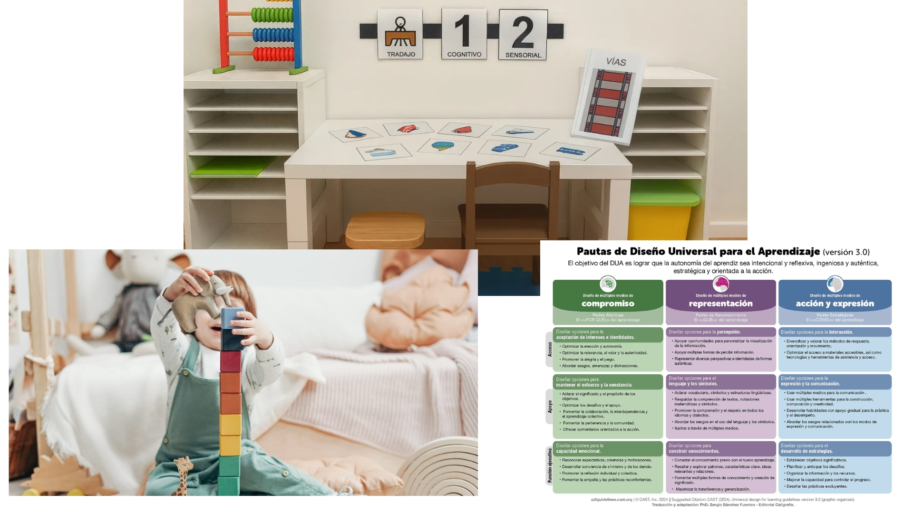

Metodologías
Se emplea una combinación de enfoques metodológicos que integran estructura, motivación y adaptación individualizada:
TEACCH (estructura, anticipación y organización visual del entorno).
Modelo Denver (interacción social, motivación y aprendizaje a través del juego).
Diseño Universal para el Aprendizaje (DUA) (múltiples formas de representación, acción y expresión).

Metodologías activas
🔥 Se incorporan además metodologías activas complementarias:
- Aprendizaje Basado en la Experiencia (learning by doing)
El alumnado aprende a través de la manipulación directa, la exploración sensorial y la interacción con materiales reales vinculados a la primavera. - Aprendizaje por Rutinas y Estructuras Predecibles
Fundamental en alumnado TEA, permite anticipar, reducir ansiedad y aumentar la participación activa. - Aprendizaje Cooperativo Ajustado
- Se promueven interacciones simples entre iguales (miradas, turnos, imitación), ajustadas al nivel del alumnado.
- Uso de refuerzos visuales, dinámicas tipo “consigue-logra-termina” y sistemas de motivación inmediata.
- Enseñanza Naturalista
- Aprovechamiento de situaciones espontáneas para generar aprendizaje funcional (miradas, elecciones, demandas).
Principios para la intervención
- Aprendizaje sin error.
- Refuerzo positivo inmediato.
- Tareas cortas y altamente estructuradas.
- Adaptación constante al nivel del alumno.
- Uso prioritario de apoyos visuales.
- Fomento de la comunicación funcional (SAAC).
- Regulación emocional mediante entornos seguros y predecibles.